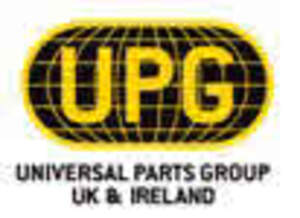

Trade Mark Journal No.2025/031 1 August 2025
UK00004233434 14 July 2025 (7,9,12,17,35)

- Class 7
- Engines, powertrains, and machine parts, and controls for the operation of machines and engines; control mechanisms for machines, engines or motors; starter motors; starters for motors and engines; alternators; electric ignition coils for automotive engines; coil packs; pumps, compressors and blowers; fuel/air ratio controls [parts of engines or motors]; throttle bodies; carburettors; engine camshafts; camshafts for machines; camshafts for machine engines; camshaft adjustment valves; crank shafts; fuel vaporizers; exhaust gas treatment systems for diesel engines; exhaust gas recirculation [EGR] valves for motors and engines; exhaust gas recirculation coolers; exhausts; exhaust parts; exhaust systems for vehicles; exhaust systems for heavy goods vehicles; cylinder head gaskets; gaskets for internal combustion engines; metal engine gaskets for vehicles; non-metal engine gaskets for vehicles; oil pumps for land vehicles; oil pumps for use in motors and engines; water pumps for land vehicles; water pumps for use in motors and engines; sump pumps; oil sumps; sumps being parts of vehicle gearboxes [other than land vehicles]; timing covers; timing belts for machines, motors and engines; timing belt tensioners for land vehicles; rocker arms for motors and engines; rocker covers; crank shafts; cylinder head gaskets; cylinder heads for engines; crankcases for machines, motors and engines; connecting rods for machines; connecting rods for machines, motors and engines; bearing units for wheels; propeller shafts; universal joints; chains, being engine timing components; drive shafts, other than for land vehicles; bearings; agricultural parts and implements.
- Class 9
- Measuring, detecting, monitoring and controlling devices; controllers and regulators; sensors, detectors and monitoring instruments; temperature measuring instruments; sensors for use in the control of motors; sensors for use in the control of engines; engine control sensors; nitrogen oxide sensors; air mass meters; mass flow meters; mass flow sensors; camshaft sensors; crank shaft sensors; exhaust gas temperature sensors; exhaust gas temperature gauges; knock sensors; lambda sensors; air/fuel ratio gauges; oxygen sensors, not for medical use; oil level sensors; oil level indicators; coolant temperature sensors.
- Class 12
- Parts and fittings for vehicles; vehicle components; transmission components for land vehicles; machine couplings and transmission components for land vehicles; powertrains, including engines and motors, for land vehicles; parts and fittings and components for heavy goods vehicles; axles [land vehicle parts]; bodywork parts for vehicles; brake parts for vehicles; clutches for land vehicles; clutch mechanisms for land vehicles; crankcases for land vehicles, other than for engines; connecting rods for land vehicles, other than parts of motors and engines; sumps being parts of land vehicle gearboxes; wheel bearings for land vehicles; drive shafts for land vehicles; bearings [parts of vehicles].
- Class 17
- Flexible pipes, tubes, hoses and fittings therefor (including valves), and fittings for rigid pipes, all non-metallic; insulation and barrier articles and materials; gaskets; gaskets for automotive use; gaskets for commercial vehicles; gaskets for trucks; gaskets made of rubber; non-metal gaskets; seals, sealants, fillers; oil seals; oil seals for vehicles.
- Class 35
- Advertising services; business management; organisation and consultancy services; wholesale, retail and online retail services connected with the sale of engines, powertrains, and machine parts, and controls for the operation of machines and engines, control mechanisms for machines, engines or motors, starter motors, starters for motors and engines, alternators, electric ignition coils for automotive engines, coil packs, pumps, compressors and blowers, fuel/air ratio controls [parts of engines or motors], throttle bodies, carburettors, engine camshafts, camshafts for machines, camshafts for machine engines, camshaft adjustment valves, crank shafts, fuel vaporizers, exhaust gas treatment systems for diesel engines, exhaust gas recirculation [EGR] valves for motors and engines, exhaust gas recirculation coolers, exhausts, exhaust parts, exhaust systems for vehicles, exhaust systems for heavy goods vehicles, cylinder head gaskets, gaskets for internal combustion engines, metal engine gaskets for vehicles, non-metal engine gaskets for vehicles, oil pumps for land vehicles, oil pumps for use in motors and engines, water pumps for land vehicles, water pumps for use in motors and engines, sump pumps, oil sumps, sumps being parts of vehicle gearboxes [other than land vehicles], timing covers, timing belts for machines, motors and engines, timing belt tensioners for land vehicles, rocker arms for motors and engines, rocker covers, crank shafts, cylinder head gaskets, cylinder heads for engines, crankcases for machines, motors and engines, connecting rods for machines, connecting rods for machines, motors and engines, bearing units for wheels, propeller shafts, universal joints, chains, being engine timing components, drive shafts, other than for land vehicles, bearings, agricultural parts and implements, measuring, detecting, monitoring and controlling devices, controllers and regulators, sensors, detectors and monitoring instruments, temperature measuring instruments, sensors for use in the control of motors, sensors for use in the control of engines, engine control sensors, nitrogen oxide sensors, air mass meters, mass flow meters, mass flow sensors, camshaft sensors, crank shaft sensors, exhaust gas temperature sensors, exhaust gas temperature gauges, knock sensors, lambda sensors, air/fuel ratio gauges, oxygen sensors, not for medical use, oil level sensors, oil level indicators, coolant temperature sensors, parts and fittings for vehicles, vehicle components, transmission components for land vehicles, machine couplings and transmission components for land vehicles, powertrains, including engines and motors, for land vehicles, parts and fittings and components for heavy goods vehicles, axles [land vehicle parts], bodywork parts for vehicles, brake parts for vehicles, clutches for land vehicles, clutch mechanisms for land vehicles, crankcases for land vehicles, other than for engines, connecting rods for land vehicles, other than parts of motors and engines, sumps being parts of land vehicle gearboxes, wheel bearings for land vehicles, drive shafts for land vehicles, bearings [parts of vehicles], flexible pipes, tubes, hoses and fittings therefor (including valves), and fittings for rigid pipes, all non-metallic, insulation and barrier articles and materials, gaskets, gaskets for automotive use, gaskets for commercial vehicles, gaskets for trucks, gaskets made of rubber, non-metal gaskets, seals, sealants, fillers, oil seals, oil seals for vehicles.
Imexpart Ltd
Representative: Bailey Walsh & Co LLP